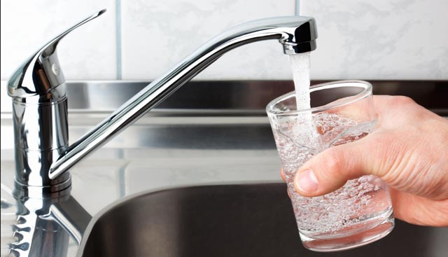

Delicious Things You Can Make with H2O
Tap Water

Description
A low-calorie treat with minimal preparation time. Cleanup is as easy as having paper towels on hand.
Ingredients
- 1 cup of water
- 1 teaspoon of water
Directions
- Place glass under tap.
- Turn tap on.
- Fill glass with water almost to top.
- Turn tap off.
- Top up glass with additional teaspoons of water until full.
- Use paper towel to mop up any spillage.
- Enjoy!
Back to Recipes